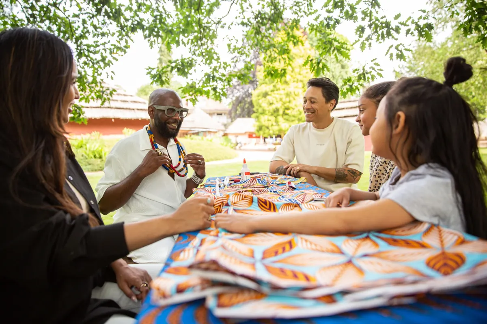
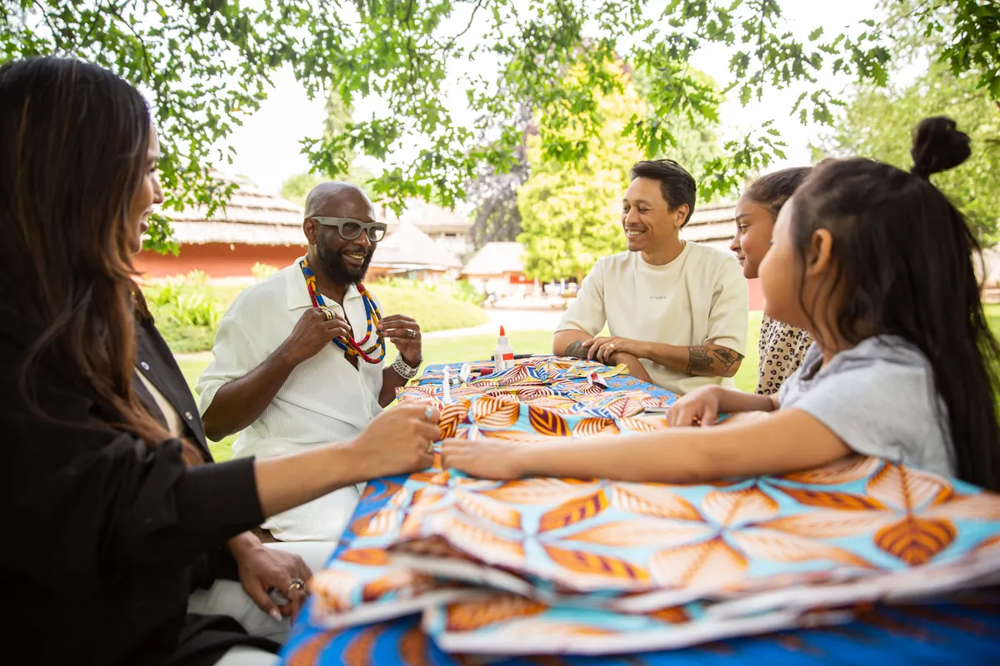
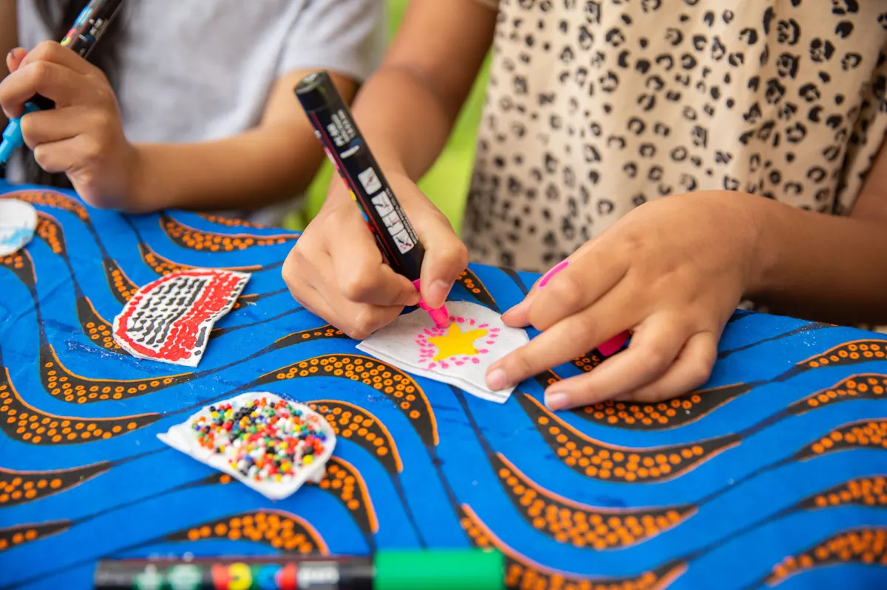
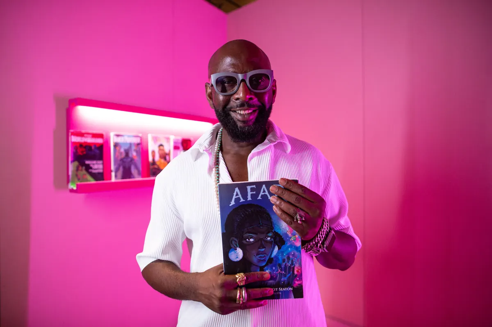
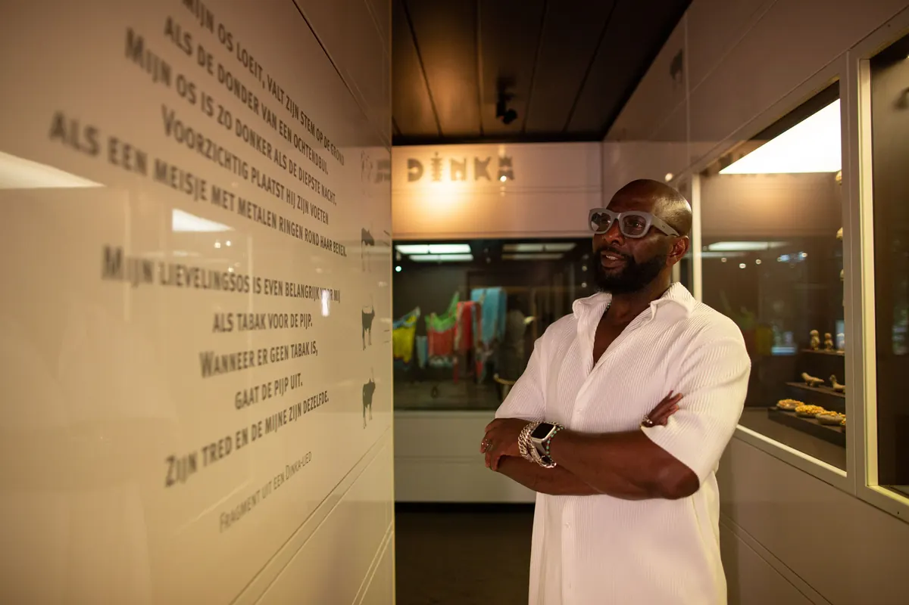
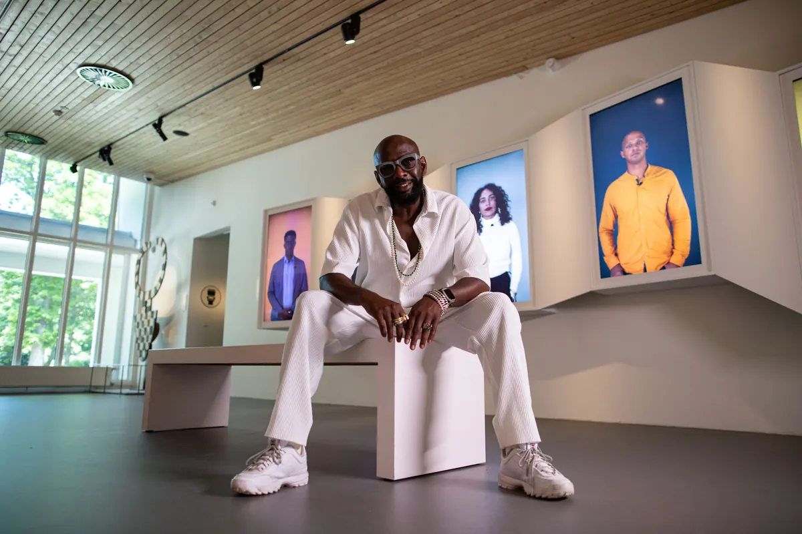

Nieuws ·
Zomerprogramma 2022 – Ontdek Nilton’s Zomeratelier!

Dit bericht uit ons archief verscheen op 7 juli 2022 op NieuwsNijmegen.nl. Data, tijden en prijzen kunnen inmiddels anders zijn.
Van 9 juli t/m 4 september 2022
Maak deze zomer kennis met kunstenaar Nilton Moreira da Silva! Nilton is beeldend kunstenaar en geboren in de stad Rio de Janeiro in Brazilië. Een week lang is hij te gast geweest in het museum en heeft hij zich laten inspireren door de tentoonstellingen Inspirerend Afrika en Religie en Samenleving. Tijdens zijn bezoek kreeg hij inspiratie voor verschillende workshops waar jij deze zomer aan mee kunt doen. Kruip ook in de huid van een kunstenaar, laat je inspireren door de verhalen van Nilton en doe mee aan de creatieve workshops.
Praktische informatie
Iedere dag kun je kiezen uit vier verschillende workshops. De workshops zijn geschikt voor kinderen vanaf ca. 6 jaar met hulp van een volwassene. De workshops starten om 11.30 uur en duren tot 16.00 uur. Dat betekent dat je tot ongeveer 15.15 uur kunt starten met een nieuwe workshop. Je bepaalt zelf waar je aan mee wilt doen, als er plaats is kan je aanschuiven.
* Elke dag tijdens de zomervakantie van 11.30 tot 16.00 uur.
* Van 19 t/m 22 juli is het de Vierdaagseweek en zijn er twee workshops per dag.
* Om mee te kunnen doen koop je voor € 3,- een ticket aan de kassa. Je kunt dan zelf kiezen aan welke workshops je wilt deelnemen.
Wil je Nilton ontmoeten? Hij geeft de workshops zelf op 10 juli, 7 augustus en 4 september.
Workshop: Ik sier mijzelf – maak een sieraad van waxprint

Met een sieraad kun je jezelf mooi maken en laten zien wie je bent. Nilton vindt dat ieder voorwerp dat op het lichaam gedragen kan worden, een sieraad genoemd kan worden, ook als het daar niet voor bedoeld is. Toen Nilton in het museum rondliep zag hij voorwerpen die rijk versierd zijn met verschillende soorten materialen. Zo zag hij ook waxprint stoffen. Deze zijn bedoeld om degene die deze stof draagt te verfraaien en te sieren met een betekenis. ‘Dat is dan toch ook een sieraad?’ was de gedachte die bij hem opkwam. Tijdens deze workshop ga je sieraden maken van waxprint stoffen. Je kan kiezen tussen een ketting of armband.
Workshop: Ik neem mijn geluk mee – maak een talisman voor geluk

Een talisman is een voorwerp waarvan wordt geloofd dat het magische krachten heeft en geluk brengt. Nilton en vele anderen die in Brazilië zijn geboren, zijn afstammelingen van tot slaaf gemaakten. Velen van hun dragen als kind vanaf de geboorte een talisman (Patuá). Deze unieke talisman is in Brazilië de meest bekende geluksbrenger. Tijdens deze workshop ga je jouw eigen Patuá maken, je maakt deze voor jezelf of voor iemand anders.
Workshop: Mijn held ben ik zelf – maak jouw persoonlijke krachtarmband

Maak kennis met de Orisha, dit zijn goden uit West-Afrika die sterk verbonden zijn met de natuur. Deze goden zijn een grote inspiratiebron voor veel jonge kunstenaars waarvan hun voorouders uit Afrika komen. Je ziet ze tegenwoordig veel terug in bijvoorbeeld games, cartoons en strips. Er zijn misschien wel honderden verschillende Orisha, tijdens deze workshop maak je kennis met vier van hen. Welke Orisha spreekt jou het meest aan en welke kracht zou jij wel willen hebben? In veel comics en films zie je vaak dat superhelden een bijzondere en grote band om hun arm hebben, waar hun kracht in zit. Je gaat zelf ook zo’n band maken en wel een heel persoonlijke; je maakt een afdruk van gips van je arm. Daarna ga je deze versieren, met de materialen en kleuren die bij de – door jou gekozen – Orisha horen.
Locatie: Kiwanda, start om 11.30, 12.45, 14.00 en 15.15 uur (duur 60 minuten)
Workshop: Ik steun je – maak van een stok je maatje

Je hebt vast nooit bedacht dat een simpele stok jouw maatje of steun kan worden. Nilton heeft daar zo zijn eigen ideeën over nadat hij in het museum een gedicht las over koeien van de Dinka, een volk dat in Oost-Afrika leeft. In deze workshop ga je een stok decoreren en versier je deze zo mooi dat deze voor jou betekenis krijgt. Je kunt de stok in je kamer zetten en er voorwerpen of foto’s aan hangen die voor jou belangrijk zijn. Of misschien ga je de stok wel gebruiken als wandelstok.
Nilton Tour

Ben je nieuwsgierig naar de objecten die Nilton geïnspireerd hebben tot deze workshops? Doe dan mee aan de Nilton Tour. In een korte rondleiding ga je langs verschillende plekken in het museum en vertelt de museumdocent je over de voorwerpen die Nilton zijn opgevallen. En misschien komt hij zelf ook nog wel aan het woord …
Iedere zondag, woensdag en vrijdag tijdens de zomervakantie (m.u.v. de Vierdaagseweek) | 12.00, 13.00 en 14.30 | Duur: 30 minuten | Vanaf 8 jaar | Verzamelen in expo 1 Inspirerend Afrika bij de videowall